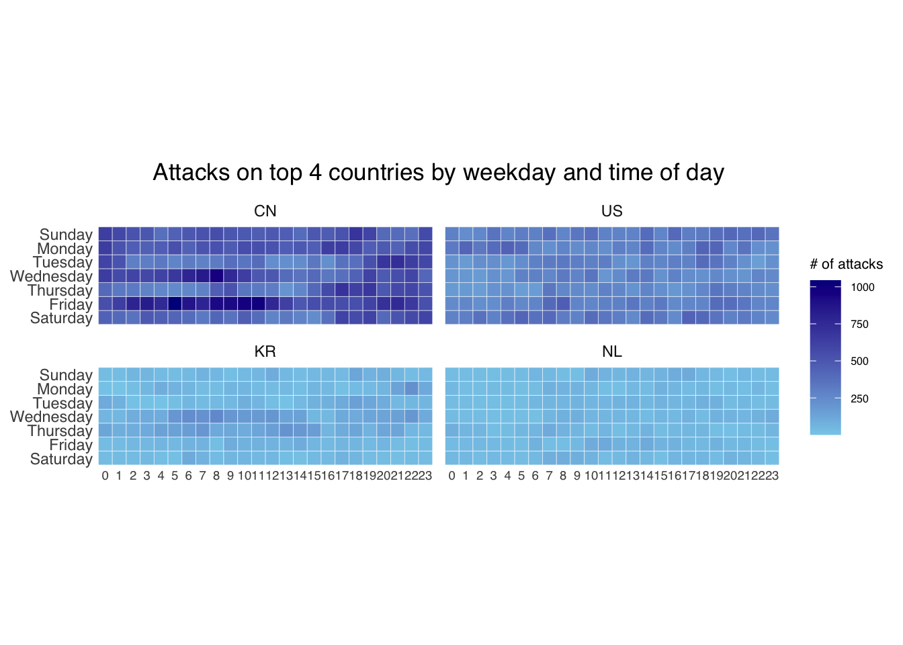
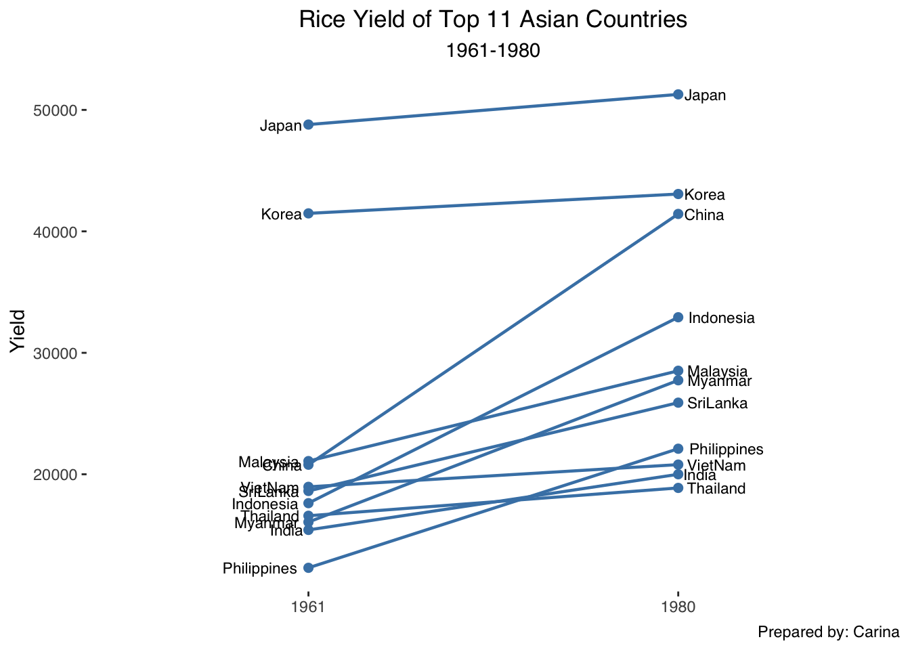

pacman::p_load(scales, viridis, lubridate, ggthemes,
gridExtra, readxl, knitr, data.table,
ggHoriPlot, tidyverse)8. Visualising and Analysing Time-oriented Data
In this exercise, calendar heatmaps, cycle plots and slopegraphs are explored to visualise and analyse time-oriented data.
Overview
Time-oriented data captures how things change over time. In this exercise, three key visualisations for time-series analysis are explored: calendar heatmaps to spot attack patterns by hour and day, cycle plots to reveal seasonal trends in visitor arrivals, and slopegraphs to compare changes in rankings across two time points.
Reflections
Time-series visualisations go far beyond a simple line chart. A calendar heatmap uses colour intensity to reveal when events cluster, for example, showing that cyber attacks spike on certain hours or weekdays. A cycle plot is particularly useful for seasonal data because it overlays multiple years on the same month panels, making trends immediately visible. A slopegraph is elegant for comparing two time points across many categories — the slope direction and angle tell the story at a glance. The key takeaway is that choosing the right chart type for time-oriented data depends on whether you are looking for patterns within a cycle, trends over time, or relative change between points.
Getting Started
Loading packages
What each package does:
scales— formats axis labels (e.g. percentages, commas)viridis— colour-blind friendly colour paletteslubridate— makes working with dates and times easyggthemes— adds extra themes liketheme_tufte()gridExtra— arranges multiple plots side by sidereadxl— reads Excel files (.xlsx)knitr— formats tables nicely withkable()data.table— fast data manipulationCGPfunctions— providesnewggslopegraph()ggHoriPlot— for horizon chartstidyverse— core suite:ggplot2,dplyr,tidyr, etc.
Plotting Calendar Heatmap
A calendar heatmap plots a grid of weekday × hour, coloured by the count of events. It reveals when attacks are most frequent at a glance.
The Data
eventlog.csv contains 199,999 rows of time-series cyber attack records. Each row records a timestamp, the source country, and the timezone.
Importing the data
attacks <- read_csv("eventlog.csv")Examining the data structure
kable(head(attacks))| timestamp | source_country | tz |
|---|---|---|
| 2015-03-12 15:59:16 | CN | Asia/Shanghai |
| 2015-03-12 16:00:48 | FR | Europe/Paris |
| 2015-03-12 16:02:26 | CN | Asia/Shanghai |
| 2015-03-12 16:02:38 | US | America/Chicago |
| 2015-03-12 16:03:22 | CN | Asia/Shanghai |
| 2015-03-12 16:03:45 | CN | Asia/Shanghai |
There are three columns:
timestamp— date-time of the attack in POSIXct formatsource_country— ISO 3166-1 alpha-2 country code (e.g. “CN” for China)tz— timezone of the source IP address
Data Preparation
Step 1: Deriving weekday and hour fields
A helper function make_hr_wkday() is written to take the timestamp, country, and timezone, and return a clean data table with the weekday and hour extracted correctly per timezone.
make_hr_wkday <- function(ts, sc, tz) {
real_times <- ymd_hms(ts,
tz = tz[1],
quiet = TRUE)
dt <- data.table(source_country = sc,
wkday = weekdays(real_times),
hour = hour(real_times))
return(dt)
}ymd_hms()from lubridate parses the timestamp string into a proper date-time object, applying the correct timezoneweekdays()from base R extracts the day of the week as a character stringhour()from lubridate extracts just the hour (0–23)
Step 2: Deriving the attacks tibble
wkday_levels <- c('Saturday', 'Friday',
'Thursday', 'Wednesday',
'Tuesday', 'Monday',
'Sunday')
attacks <- attacks %>%
group_by(tz) %>%
do(make_hr_wkday(.$timestamp,
.$source_country,
.$tz)) %>%
ungroup() %>%
mutate(wkday = factor(
wkday, levels = wkday_levels),
hour = factor(
hour, levels = 0:23))Both wkday and hour are converted to factors with explicit level ordering. This ensures ggplot2 displays them in the correct sequence (Sunday at the bottom, Saturday at the top; hours 0–23 left to right).
kable(head(attacks))| tz | source_country | wkday | hour |
|---|---|---|---|
| Africa/Cairo | BG | Saturday | 20 |
| Africa/Cairo | TW | Sunday | 6 |
| Africa/Cairo | TW | Sunday | 8 |
| Africa/Cairo | CN | Sunday | 11 |
| Africa/Cairo | US | Sunday | 15 |
| Africa/Cairo | CA | Monday | 11 |
Building the Calendar Heatmap

grouped <- attacks %>%
count(wkday, hour) %>%
ungroup() %>%
na.omit()
ggplot(grouped,
aes(hour,
wkday,
fill = n)) +
geom_tile(color = "white",
size = 0.1) +
theme_tufte(base_family = "Helvetica") +
coord_equal() +
scale_fill_gradient(name = "# of attacks",
low = "sky blue",
high = "dark blue") +
labs(x = NULL,
y = NULL,
title = "Attacks by weekday and time of day") +
theme(axis.ticks = element_blank(),
plot.title = element_text(hjust = 0.5),
legend.title = element_text(size = 8),
legend.text = element_text(size = 6))What to notice:
geom_tile()draws one rectangle per hour-weekday combination, filled by attack counttheme_tufte()strips away gridlines and chart junk for a cleaner lookcoord_equal()ensures each tile is a perfect square (1:1 aspect ratio)scale_fill_gradient()maps count to a sky blue → dark blue colour scale — darker means more attacks
Building Multiple Calendar Heatmaps
Challenge: Plot separate heatmaps for the top 4 countries with the most attacks.
Step 1: Deriving attack count by country
attacks_by_country <- count(
attacks, source_country) %>%
mutate(percent = percent(n/sum(n))) %>%
arrange(desc(n))Step 2: Filtering to the top 4 countries
top4 <- attacks_by_country$source_country[1:4]
top4_attacks <- attacks %>%
filter(source_country %in% top4) %>%
count(source_country, wkday, hour) %>%
ungroup() %>%
mutate(source_country = factor(
source_country, levels = top4)) %>%
na.omit()Step 3: Plotting the multiple calendar heatmaps

ggplot(top4_attacks,
aes(hour,
wkday,
fill = n)) +
geom_tile(color = "white",
size = 0.1) +
theme_tufte(base_family = "Helvetica") +
coord_equal() +
scale_fill_gradient(name = "# of attacks",
low = "sky blue",
high = "dark blue") +
facet_wrap(~source_country, ncol = 2) +
labs(x = NULL, y = NULL,
title = "Attacks on top 4 countries by weekday and time of day") +
theme(axis.ticks = element_blank(),
axis.text.x = element_text(size = 7),
plot.title = element_text(hjust = 0.5),
legend.title = element_text(size = 8),
legend.text = element_text(size = 6))facet_wrap(~source_country, ncol = 2) splits the plot into a 2×2 grid, one panel per country. This makes it easy to compare attack patterns side-by-side.
Plotting Cycle Plot
A cycle plot shows seasonal patterns by faceting across months, drawing each year as a separate line within each month panel. A red dashed horizontal line marks the monthly average, making it easy to see whether recent years are above or below the long-run norm.
Step 1: Data Import
air <- read_excel("arrivals_by_air.xlsx")Step 2: Deriving month and year fields
air$month <- factor(month(air$`Month-Year`),
levels=1:12,
labels=month.abb,
ordered=TRUE)
air$year <- year(ymd(air$`Month-Year`))month()extracts the month number (1–12), then labelled with standard three-letter abbreviations (month.abb)year()extracts the four-digit year- Both use
lubridatefunctions
Step 3: Extracting the target country
The analysis focuses on Vietnam, filtering to 2010 onwards.
Vietnam <- air %>%
select(`Vietnam`,
month,
year) %>%
filter(year >= 2010)Step 4: Computing year average arrivals by month
hline.data <- Vietnam %>%
group_by(month) %>%
summarise(avgvalue = mean(`Vietnam`))This creates a small summary table with one average value per month — used to draw the red reference line.
Step 5: Plotting the cycle plot

ggplot() +
geom_line(data=Vietnam,
aes(x=year,
y=`Vietnam`,
group=month),
colour="black") +
geom_hline(aes(yintercept=avgvalue),
data=hline.data,
linetype=6,
colour="red",
size=0.5) +
facet_grid(~month) +
labs(axis.text.x = element_blank(),
title = "Visitor arrivals from Vietnam by air, Jan 2010-Dec 2019") +
xlab("") +
ylab("No. of Visitors") +
theme_tufte(base_family = "Helvetica")What to notice:
geom_line()draws one line per month panel, with year on the x-axis — each panel shows how that particular month has trended over the yearsgeom_hline()draws a dashed red line at the per-month average — lines above it indicate above-average yearsfacet_grid(~month)creates 12 side-by-side panels, one per month
Plotting Slopegraph
A slopegraph compares values for multiple categories at two time points, using the slope of the connecting line to show whether each category increased, decreased, or stayed the same. It is ideal for ranking comparisons.
Step 1: Data Import
rice <- read_csv("rice.csv")Step 2: Plotting the slopegraph


What to notice:
mutate(Year = factor(Year))converts the year from a number to a categorical label, this is required bynewggslopegraph()to treat the two years as discrete endpoints rather than a continuous axisfilter(Year %in% c(1961, 1980))keeps only the two comparison yearsnewggslopegraph(Year, Yield, Country)maps time to the x-axis, the measured value (rice yield) to the y-axis, and labels each line by country- Lines sloping upward indicate yield increased; lines sloping downward indicate a decline between 1961 and 1980